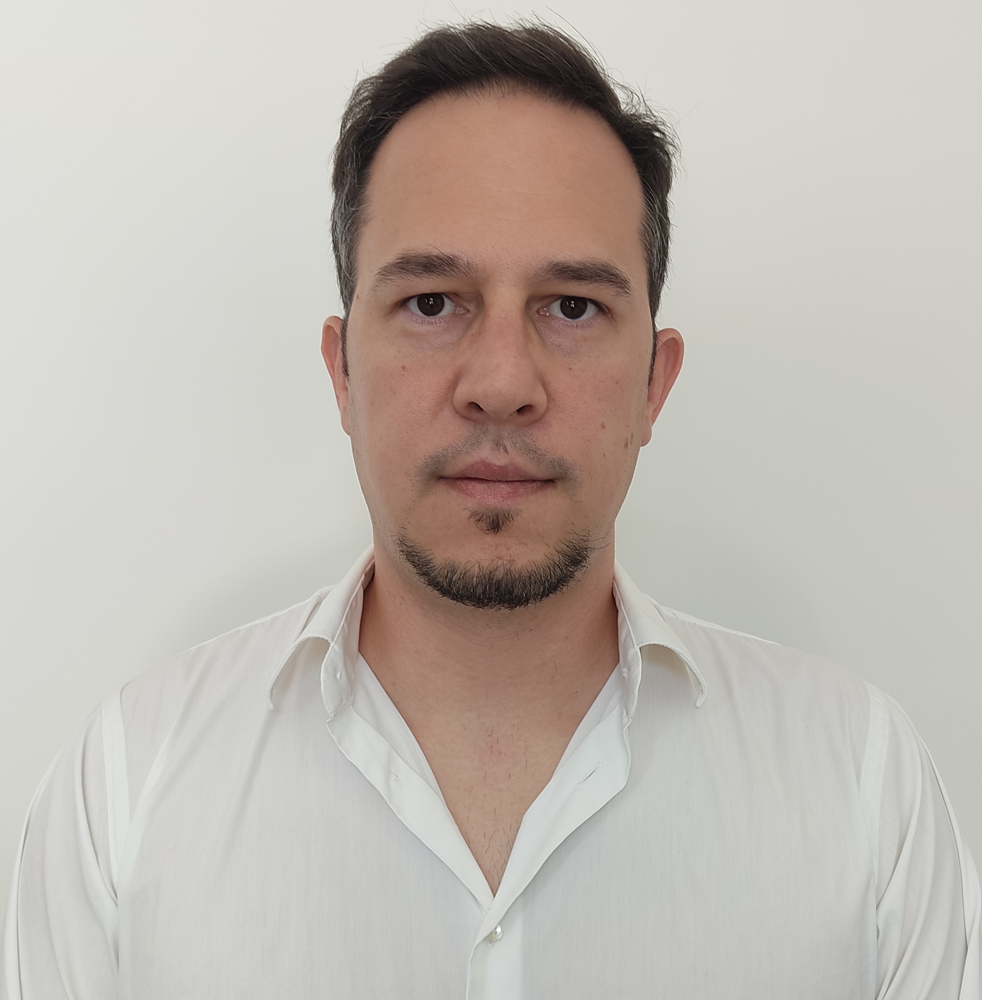

// sobre mim · U2 · RAM
Sobre mim

Olá! Chamo-me Lloyd Costa e tenho 38 anos. Nasci em França, mas Portugal sempre foi a minha casa pois cheguei com apenas dois anos e fiz aqui todo o meu percurso académico, até à licenciatura em Engenharia Civil.
Assim que terminei a licenciatura comecei a trabalhar num gabinete local sobretudo em projeto. Mais tarde tive a oportunidade de ir para Angola onde durante dez anos (2013–2023) trabalhei como engenheiro civil tanto em obra e como em projeto. Foi aí que aprendi o que dificilmente se ensina numa sala de aula como gerir prazos reais, resolver problemas sob pressão e ser responsável por trabalho que tem de funcionar à primeira. Para além de crescer muito a nível profissional também cresci muito a nível pessoal. (podes ver esse percurso em detalhe no Passado Profissional →)
A par disso, a tecnologia foi sempre uma paixão que nunca me largou. No regresso a Portugal, decidi finalmente segui-la a sério e assim tirei uma pós-graduação em Desenvolvimento de Software. Nunca tinha escrito uma única linha de código e foi precisamente esse salto, do betão para o software, que me mostrou que era isto que queria fazer. Hoje trago para a programação a mesma disciplina e foco em resultados que a engenharia me deu.
Fora do ecrã, gosto de uma boa caminhada, de viajar, de desporto e de passar tempo com a família e os amigos. E, claro, de videojogos 😊.
// about me · U2 · RAM
About me
Hello! I'm Lloyd Costa, I'm 38 years old, and I was born in France, but Portugal has always been home — I arrived when I was just two years old and did my entire academic path here, up to my degree in Civil Engineering.
As soon as I finished my degree I started working at a local engineering office, mostly on design work. Later I had the chance to move to Angola, where for ten years (2013–2023) I worked as a civil engineer, both on site and in project design. That's where I learned what is hard to teach in a classroom: managing real deadlines, solving problems under pressure, and being responsible for work that has to be right the first time. Beyond growing a lot professionally, I also grew a great deal personally. (you can see this path in detail under Work Experience →)
Alongside that, technology was always a passion that never left me. Back in Portugal, I decided to finally pursue it seriously and took a postgraduate degree in Software Development. I had never written a single line of code — and it was precisely that leap, from concrete to software, that showed me this is what I want to do. Today I bring to programming the same discipline and focus on results that engineering gave me.
Off-screen, I enjoy a good hike, travelling, sport, and spending time with family and friends. And, of course, video games 😊.